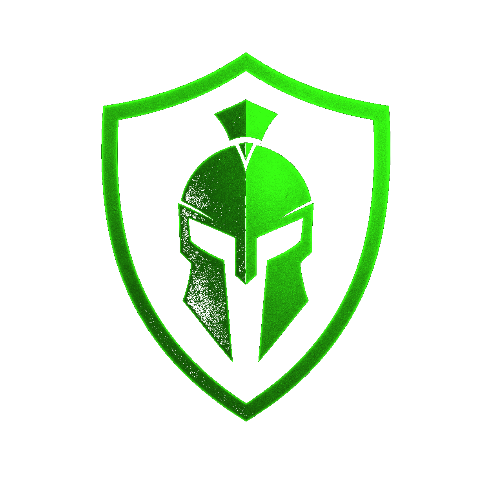

QUIZ GUARD-IA
- INSERT COIN -
Tu ruta de la IA,
paso a paso
.
a tu ritmo · se guarda
0/6 superados
Reiniciar mi ruta
✔
0
0/0
SIGUIENTE >>
Volver a la ruta
🤖
NIVEL COMPLETADO
0/10
aciertos
SIGUIENTE NIVEL ▶
REPETIR ↻
VER RUTA
GUARD-IA · QUIZ